{kind=link}
Estamos metidos de lleno en esa época del año, tan amada por unos y tan odiada por otros: el verano. El caso es que muchos estaréis disfrutando de unas merecidas —o no— vacaciones, pero muchos otros estamos pringado de lo lindo, aguardando —o no— esa fecha marcada en el calendario para hacer la gran escapada. Somos precisamente nosotros, los que tratamos de evadir nuestra mente pensando en las futuras vacaciones, los que anhelamos la música que haga volar nuestras mentes al destino más paradisiaco.
Si ya en otras ocasiones el sector oscuro de SuicideByStar organizó desde su refugio secreto un golpe de estado con Nadja como estandarte, este año, dejamos a un lado las indigestiones de polvorones y nos disponemos a realizar una selección de discos que, si bien no van a conseguir optar a la lista más cool de la temporada, pretenden recomendar ciertos discos propicios para este época del año bajo los criterios de positivismo, alegría y buen rollo. Siendo un mix de frescas novedades, clásicos trillados y debilidades personales, estoy seguro que algo encontraréis que satisfaga vuestras ansias.
INCUBUS – Morning View (2001)
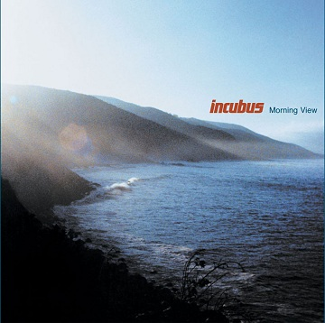Acogedor y positivo —chulo incluso a nivel de guapo de playa—, este disco es para los californianos una evolución hacia un rock más convencional y con menos pretensiones que precisamente consigue transmitir esa sensación de levantarse una mañana de verano y saber que se tiene todo el día para disfrutar. Aunque pueda parecer uno de sus trabajos más comerciales, en realidad representa el crecimiento del grupo en otra dirección: Brandon Boyd moldea con gran destreza las melodías y la instrumentación se hace más elegante. Con este cuidado al máximo de los detalles, convencerá a todo aquel que quiera dejarse seducir.
{kind=link}
MANSUN – The Attack of the Grey Lantern (1997)
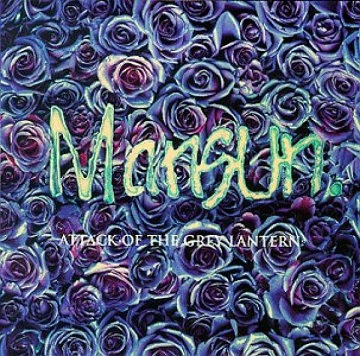Opulentas canciones de una de las más interesantes —e infrarreconocidas— bandas de brit-pop, que se funden como un cubito de hielo al sol. Armonías brillantes y vaporosas, toques experimentales, ideas progresivas, salidas electrónicas, ácidos sintetizadores, y ese característico falsete de Paul Draper hacen palpable que si bien otras bandas de su movimiento bebían de los Beatles, ellos lo hacían de los 80, de la suntuosidad de Prince y de la sensibilidad de Ride. Su sonido amable, rico en texturas, y en cierta manera exótico, es perfecto para refrescarse y relajarse de los agobios estivales.
{kind=link}
ASH – Free All Angels (2001)
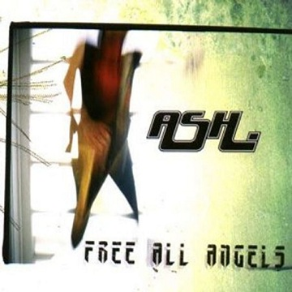Qué mejor banda sonora para la despreocupación que la de un disco que nos canta que hemos estando andando descalzos por la arena. El power-pop de Ash tiene melodías jugosas y acordes rebosantes de energía, esa sensación de querer comerte el mundo y verte capaz de ello. Juvenil, rápido, feliz, romántico, y en ocasiones incluso con un ligero deje de actitud rabiosa (como demuestran en World Domination o en Sharks donde la guitarra llora la sobredosis de overdrive), este trabajo de los norirlandeses presume de los atributos básicos que se presumen a esas vacaciones idílicas de nuestra adolescencia.
{kind=link}
LOS CORONAS – Surfin’ Tenochtitlan (2006)
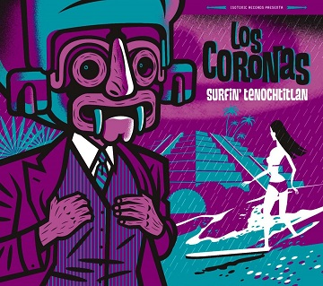Como íbamos a tener una lista de discos del verano sin nada de surf-rock, sería de prisión. ¿Y por qué salir del país si aquí tenemos uno de los grupos más interesantes dentro de este estilo como son Los Coronas? Guitarras castigadas por el vibrato, ritmos pegajosos y bailongos, y una trompeta que invoca al sol del far-west. Su música instrumental, cálida y animada, nos proporciona la banda sonora perfecta para ese largo viaje a la playa. Todo un cóctel de temas frescos y otros clásicos suyos regrabados para la ocasión que no escatiman en ganas de fiesta y que ni se olvidan de ese tema de medio tiempo para bailar a modo latin-lover.
{kind=link}
WEEZER – Blue Album (1999)
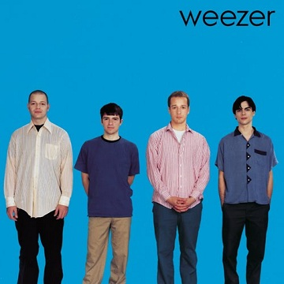Sé que es innegable que Green Album merecería todas luces estar antes que éste en esta lista veraniega, pero creo que es patente que muy a pesar de Island Sun —la cual me llegó a sobrepasar gracias a que esa corporación telefónica nos invadiese con ella en su publicidad— el debut de Weezer es su trabajo más brillante en todos los sentidos. Sabiendo combinar power-pop con una faceta ligeramente nostálgica e inadaptada, lo que lo aleja de poder ser considerado simplista o plano, y superando a cualquier rival con momentos álgidos con solos dignos de rock-star (Only in Dreams), la banda de Rivers Cuomo bate todos los records en cuanto al top de música con buenas vibraciones.
{kind=link}
SUBLIME – Sublime (1996)
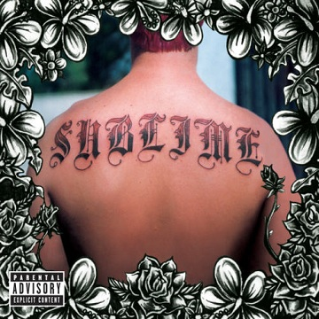Ya, se lo que estáis pensando: “¿No nos lo estabais pasando suficientemente bien que habéis tenido que colocaros?”. Que la música de Sublime nos remita al cáñamo y al tranquilo reaggea lifestyle —y mal que nos pese a la muerte por sobredosis de su frontman Brad Nowel— no signifca que no pueda ser disfrutada sobrio y en cualquier momento del año, pero eso sí, mucho mejor en verano. Los sonidos de Jamaica, el ska mezclándose con el reagge, los dejes blueseros y su actitud punkarra conforman una combinación que alcanza grado de entidad única, estandarte noventero y por supuesto absoluto éxito de ventas y de popularidad.
{kind=link}
FANG ISLAND – Major (2012)
Como el título del disco parece querer indicar, las escalas mayores tienen —a nuestros oídos occidentales— una sensación más alegre. Con su nuevo disco, Fang Island parecen haber remarcado esa faceta noble e inocente de su música, que combina rock, power-pop, psicodelia y estructuras progresivas, completamente ausente de pretensiones de encajar en algún sitio en concreto. Aunque menos impactante o extrovertido que su disco anterior, Major está relleno de un material más emocional, como si tuviera un mayor ánimo de celebración hacia la vida, como si estuviera compuesto para una íntima fiesta de cumpleaños de tu mejor amigo.
{kind=link}
LOS TELEPLÁSTICOS – Cataplasma!! (2011)
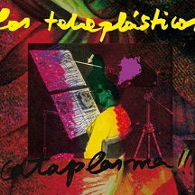Hay tantos veranos distintos como personalidades diferentes, por ello el de Los Teleplásticos no puede ser nada convencional. Su surf-rock se sumerge en el histronismo, el ruidismo y la esquizofrenia. Con sus letras cargadas de humor e ironía nos mofamos del modernismo, perseguimos a féminas convertidos en vampiros sedientos de sangre, y asustamos a niñatos que se creen matones discotequeros. ¿Dónde estará el límite si Me jodo y me aguanto convierte la canción ligera en horror tropical? En definitiva, un lobo con piel de cordero. Exquisitamente macarra, sucio y desquiciante.
{kind=link}
WAGON COOKIN’ – Everyday Life (2004)
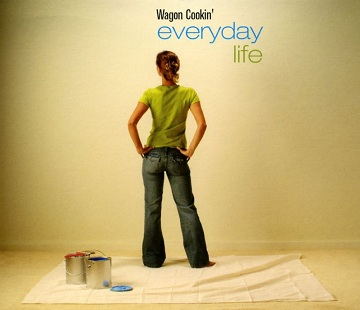No tan conocidos como deberían —al menos en España, ya que es en Europa del Este donde han tenido más éxito— Wagon Cookin’ son un dúo de hermanos de origen navarro que facturan música electrónica que se caracteriza por ritmos suaves propios del acid jazz aderezada con sensuales voces femeninas, y toques latinos a cargo de saxos y percusiones que la dotan de un halo completamente paradisiaco. Aunque todavía arrastra mucha herencia del house, las influencias de la bossa nova y del broken beat, hacen esta música para cerrar los ojos y sentir que te encuentras en una playa brasileña.
{kind=link}
ANAMANAGUCHI – Summers Singles (2010)
Si eres de esa parte de la humanidad que es capaz de confraternizar con el sonido 8-bit y aún no has escuchado a Anamanaguchi no se qué haces ahí sentado como si no pasase nada. Hace dos veranos que los excelsos estandartes del chip-tune colgaron gratuitamente una serie de singles en su web—todavía los podéis descargar— bastante variopinta: sobredosis de azúcar, remezclas, ritmos electrónicos machacantes, melodías adictivas no aptas para epilépticos y una base guitarrera a la vieja usanza, todo ello bajo la perspectiva de la banda sonora de un videojuego de los 80.
{kind=link}
KYUSS – Blues For The Red Sun (1992)
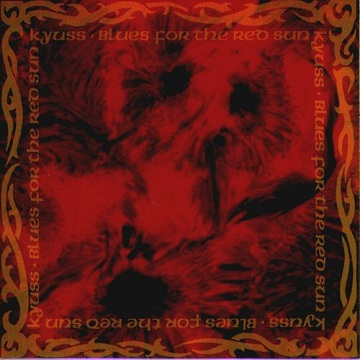Si tu verano ideal no es escaparte a la playa sino ir al desierto a ponerte de LSD, tu música es el stoner-rock. Añadamos al conjunto un Cadillac, gafas de sol, botas de vaquero y mucha carretera por recorrer. ¿Qué falta? Kyuss en el radiocasette, por supuesto, y ganas de saborear la libertad y atravesar las puertas del ocaso. Con sus lacerantes riffs, sus sacudidas rítmicas, las pesadas cadencias, la energética voz de John García y esa psicodelia desértica no es difícil entender por qué este grupo recategorizó este sub-genéro de hard-rock y lo convirtió en el rock de los fumados.
{kind=link}
STONE TEMPLE PILOTS – Tiny Music… Songs From The Vatican Gift Shop (1996)
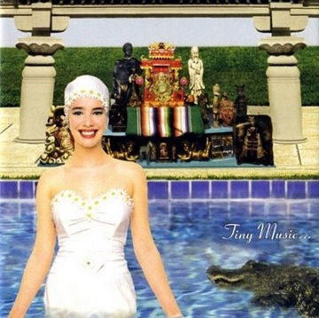Con su tercer trabajo, los chicos de Scott Weiland explotaron su vena más melódica y amable, acallando todas las críticas que los enmarcaban como polizones del movimiento grunge, demostrando que lo suyo siempre fue el rock clásico y el gusto por lo retro en cuanto con guiños hacia el pop, la psicodelia o el lounge. Plagado de tremendos singles como Big Bang Baby, Lady Picture’s Show o Trippin’ on a Hole in a Paper Heart, es un disco realmente disfrutable, y que aún así conserva plenamente la fuerza con canciones de la talla de Tumble in the Rough o Ride The Cliché. A día de hoy sigue resultando tan fresco como la piscina de su portada.
{kind=link}
BULLITT – Love Or Die (2010)
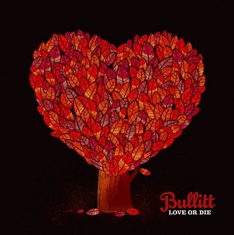Si algo destaca en el sonido de estos catalanes son las vibraciones positivas que se desprenden de su rock de corte alternativo que no deja de mirar las referencias emo-noventeras. Optimistas y directos, a veces rayando las fronteras del power-pop, Bullitt son una auténtica factoría de canciones con grandes melodías. Su método de trabajo es tan resolutivo como humilde y honesto: descargas de riffs —a veces amigables, a veces frenéticos— y una sección rítmica que sin alardear, destaca y aporta detalles. Otro de los tesoros del sello Bcore que garantiza la banda sonora ideal para el verano.
{kind=link}
Apoyános